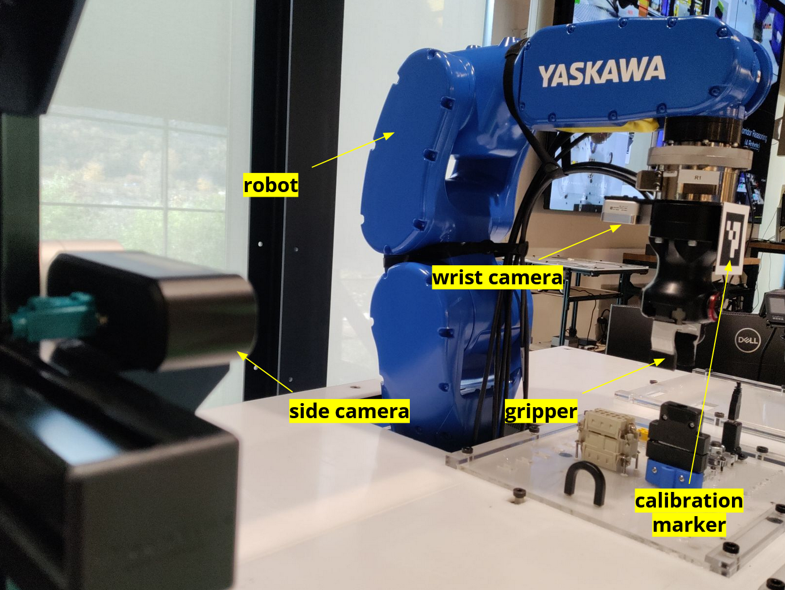
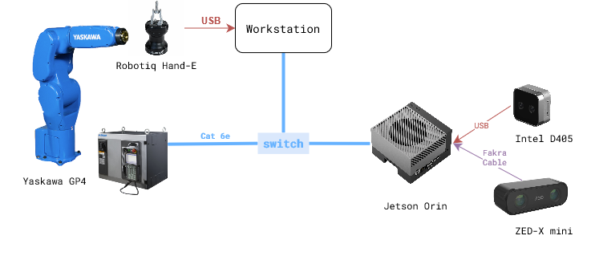

Vision System - Installation

Hardware
The figure below shows the experiment setup during the project period. The list of hardware components can be found here in the BOM sheet.

Note: Bolt pattern of GP4 end effector and Robotiq HandE is different. So, a custom adapter plate will be needed to mount the Robotiq HandE on GP4.
Software
There are two levels of software installation required for the vision system.
1. Device Interfaces
This includes the installation of the software required to interface with the hardware components like robots, cameras, grippers, etc.
Relevant repositories:
motoman_ros1
zed-ros-wrapper
realsense-ros1-docker
rosbridge_suite
2. Vision System
This includes the installation of the software required to run the vision system which involves teach, learn and execute tasks described in the overview section.
Relevant repository:
rtc_vision_toolbox
Installation Steps
Step 1: Device Interfaces
Follow the installation instructions in the respective repositories.
Make sure the devices are connected and working properly.
Pre-requisite for the vision system is two cameras, one robot arm, and one gripper.
Note: Notice that the relevant repositories in the device interfaces are all ROS packages. If using ROS-wrapper device interface, then they need to be started seperately. Otherwise, direct device SDK based interfaces can be directly implemented in
camera/androbot/modules of the vision system. For example, ‘Orbbec’ camera SDK interface is directly implemented incamera/orbbecmodule and ‘Robotiq’ gripper SDK interface is directly implemented inrobot/robotiqmodule.
Step 2: Systems Check
Setup the python virtual environment and install the required packages.
$ python3 -m venv venv $ source venv/bin/activate $ pip install -e .
Run the
test.pyscript in thecamera/androbot/modules to check the device interfaces.If all tests pass, then the devices are ready for the vision system.
Use the venv for all the following steps.
source venv/bin/activate
Step 3: Device Setup: Camera-Robot Calibration
There are two cameras to do the calibration: one fixed to ground (eye-on-base), and the other mounted on the robot arm (eye-on-arm).
eye-on-base:
Mount the camera on a fixed position.
Print and fix an ArUco marker on the robot arm end effector.
Review the script
scripts/robot_camera_calibration.pyto make sure it uses the right device interfaces. Make surecamera,robot, andmarkerobjects are rightly initialized.Run the script to calibrate the camera and robot arm.
# Run the calibration script $ python scripts/robot_camera_calibration.py
Calibration data and results will be saved in scripts directory. Move them to a desired directory, like
data/calibration/.
eye-on-arm:
Pre-requisite: one calibrated camera on base.
Mount the camera on a the robot arm
Print and put the AruCo marker in the scene such that both cameras (scene-camera and in-hand camera) can see the marker.
Review the script
scripts/gripper_camera_calibration.pyto make sure it uses the right device interfaces. Make surescene_camera,inhand_camera,robot, andmarkerobjects are rightly initialized.Run the script to calibrate the camera and robot arm.
# Run the calibration script $ python scripts/gripper_camera_calibration.py
Calibration data and results will be saved in scripts directory. Move them to a desired directory, like
data/calibration/.
Step 4: Create Config Files
Update the
place_object.yamlconfig file with your setup parameters.# Create directory for training data to be stored $ mkdir -p data/demonstrations/<dd-mm> # Copy a config file from demo-example $ cp demo-example/demonstrations/08-14-wp/place_object.yaml data/demonstrations/<dd-mm>/
Step 5: TEACH - Collect training data
Use
collect_demonstrations()method inTeachPlaceclass to collect training data.place_teach.pyscript can be used to run the teach script.# Activate the virtual environment, if not already done. $ source venv/bin/activate # Run the teach script $ python scripts/place_teach.py --config ../data/demonstrations/<dd-mm>/place_object.yaml
A bash script can also be created to run the teach script for different connectors. See *.sh files in the
scripts/directory for examples.Data is collected in the
data/demonstrations/<dd-mm>directory. Review the depth images of action and anchor objects to make sure the data is collected correctly. Adjust the parameters intrainingsection inplace_object.yamlfile to get good quality data.Use
scripts/view_ply.pyscript to visualize the point cloud data.
Step 6: LEARN - Train the model
Data Preparation.
prepare_data()method inLearnPlaceclass is used to prepare the training data.place_learn.pyscript shows how to execute the method.
Reviewtrainingparameter inplace_object.yamlfile to make sure the data is prepared correctly.# Activate the virtual environment, if not already done. $ source venv/bin/activate # Run the learn script $ python scripts/place_learn.py --config ../data/demonstrations/<dd-mm>/place_object.yaml
Training the Model.
Review instructions in
model/README.mdto configure training parameters.Run the training script.
# (optional) Run the model training in a terminal multiplexer like tmux or screen. tmux new -s vision-training # Activate the virtual environment, if not already done. $ source venv/bin/activate # Run the training script $ cd model/taxpose $ CUDA_VISIBLE_DEVICES=1 python scripts/train_residual_flow.py --config-name <path/to/taxpose/training/config>
Training will take a few hours to complete. Monitor the training progress on WANDB dashboard.
Update the
training.model_configparameter in theplace_object.yamlfile with the<path/to/taxpose/training/config>Once the training is complete, save the location of the trained model in the
models/taxpose/configs/checkpointsdirectory.
Step 7: EXECUTE - Run the vision system
Review the
executionparameter in theplace_object.yamlfile.Use
execute()method inExecutePlaceclass to run the vision system.place_execute.pyscript can be used to run the execute script.# Activate the virtual environment, if not already done. $ source venv/bin/activate # Run the execute script $ python scripts/place_execute.py --config ../data/demonstrations/<dd-mm>/place_object.yaml
Step 8: Validate and Retrain:
To validate the system use
validate_execute()method inExecutePlaceclass.Run it a few times to get a sample set of data.
Use the
notebooks/visualize_pcd.ipynbnotebook to calculate the error and visualize the point cloud data for the action and anchor objects.If the error is high, then retrain the model by repeating steps 5-6-7.